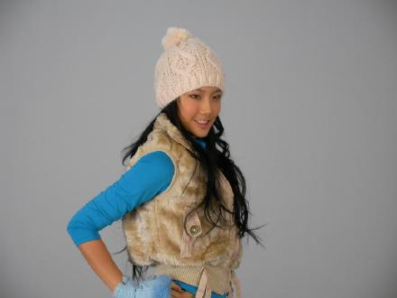
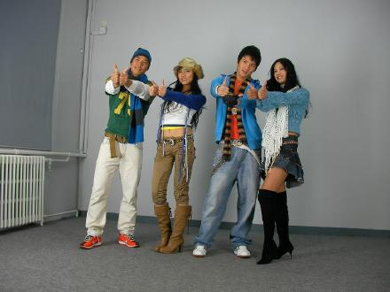

造型1,可爱型?
这是百事可乐08年标志动作,表示爱中国的意思

造型2,大家都说帽子有点像唐伯虎,下半身很凉快啊
突然发现自己戴帽子也挺好看的,但是这顶不是我最喜欢的.
百事广告主要演员：新加坡的著名主持人兼演员ALLEN,他肌肉很漂亮,我称他为猛男.蒙古族的格里杰夫,和模特SUNNY.我们一起爱中国.

这顶帽子我喜欢,但最终没用.
最终决定我们四人个的服装是这样的,还是唐伯虎帽子比较可爱,为了色彩更丰富,我穿了三层衣服,和SUNNY比起来,我保暖多啦